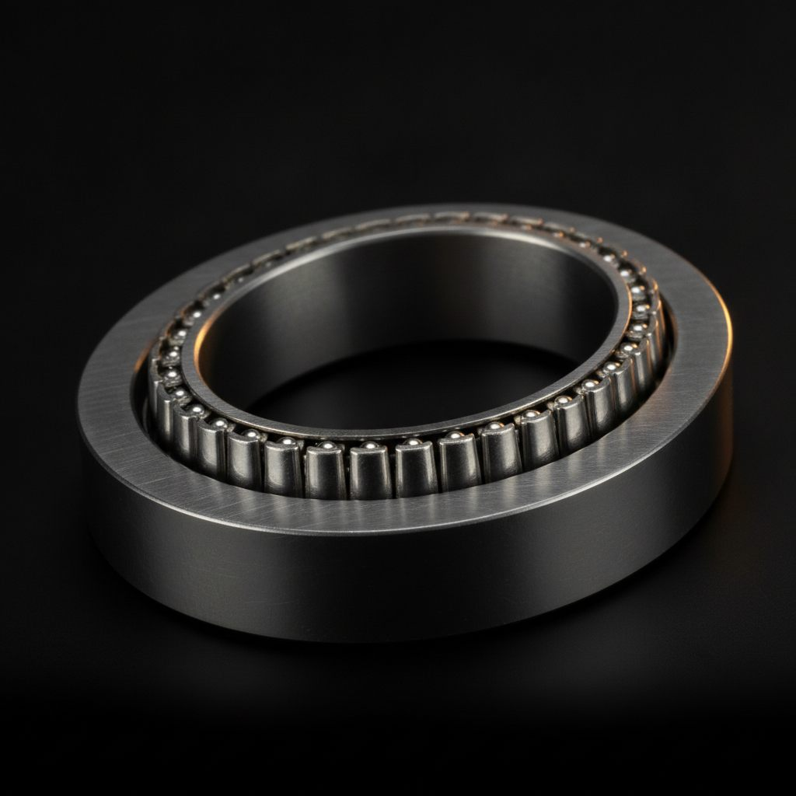
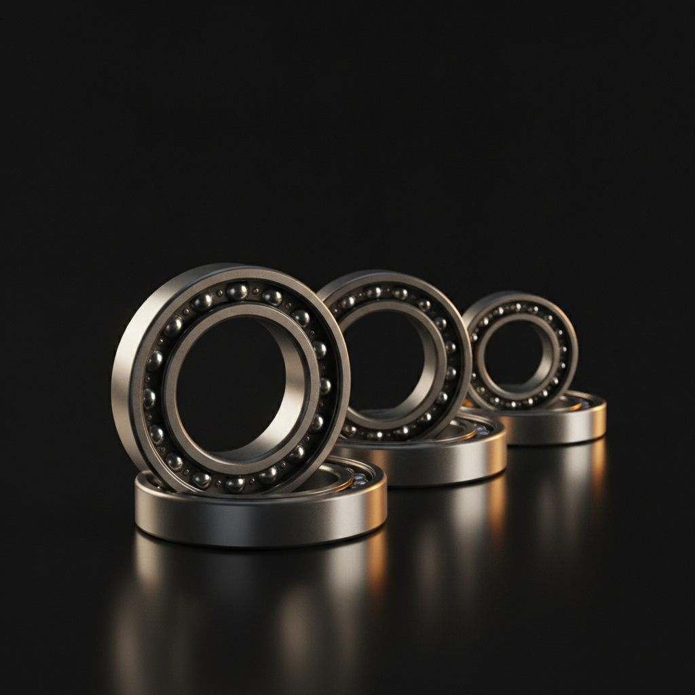

제품 사진

웨이브 제너레이터 베어링
타원 캠 추종 유연 박형 구조 — 현품 역설계 가능

유연 박형 베어링 시리즈
비규격 치수·소량 제작 상담 — 문의 시 사양 자료 제공
어디에 쓰이나
✓
산업용 로봇 관절
하모닉 감속기 웨이브 제너레이터부
✓
협동로봇·정밀 스테이지
고정밀 위치 제어가 필요한 구동부
✓
반도체·디스플레이 장비
클린룸 환경 감속기 유닛
이런 상황이면 문의하십시오 — 수입 웨이브 제너레이터 베어링의 납기가 길다, 단종 통보를 받았다, 감속기 유닛에서 베어링만 따로 구하고 싶다. 현품이나 도면이 있으면 제작 가능 여부를 바로 확인해드립니다.
관련 기술 인사이트
정밀도 등급
베어링 정밀도 등급 P5·P4·ABEC — 등급을 올려도 진동이 안 잡히는 이유
역설계
도면 없이 사진 한 장으로 시작한 역설계
단종 대응
단종 베어링 반도체 설비 역설계 — 도면 없이 2주 납품 사례
현품이나 도면이 있다면, 지금 문의하세요
웨이브 제너레이터 베어링은 사양 확인이 먼저입니다.
제작 가능 여부를 무료로 확인해드립니다.
평일 09:00~18:00 / 긴급 문의 24시간 접수 · MOQ 1개